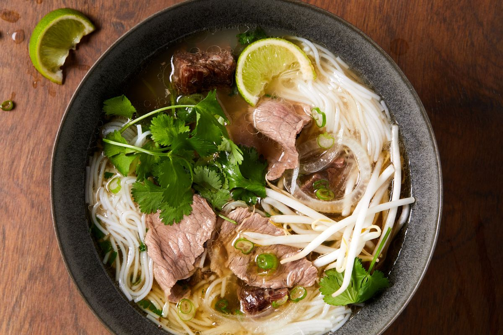

Phở

Description
Pho is a Vietnamese soup dish consisting of broth, rice noodles, herbs,
and meat. Phở is a popular food in Vietnam where it is served in
households, street-stalls, and restaurants country-wide. Residents of the
city of Nam Định were the first to create Vietnamese traditional phở.
Ingredients
Broth
- 1 tablespoon rapeseed oil
- 3 shallots
-
1 bunch green onions, thinly sliced, white and green parts separately
- 4 cloves garlic, finely chopped
- fresh ginger, finely chopped (as much as the garlic)
- 1.4 l chicken broth
- 2 star anise
- 1 tbsp soy (light)
- 1 tbsp fish sauce
Content
- 500 g rice noodles
- 500 g beef, in leaf-thin slices
Garnish
- 1 red onion, thinly sliced
- fresh coriander, finely chopped
- mint
- bean sprouts
- pak choi
- green onions
- lime wedge
- red chili fruit
- chili sauce
- fish sauce
Steps
- Heat the oil in a pot over medium heat.
-
Sauté the shallots, the white part of the green onions, the garlic and
the ginger without browning.
- Add the broth, star anise, soy and fish sauce.
- Let the broth simmer for 30 minutes.
- Strain the broth and test the seasoning.
-
Cook the noodles according to the instructions on the package and cut
the beef into leaf-thin slices, this is easiest if you half-freeze the
meat first.
- Divide the noodles into four bowls and top with the meat.
- Boil the broth and pour it over the meat and garnish to taste.